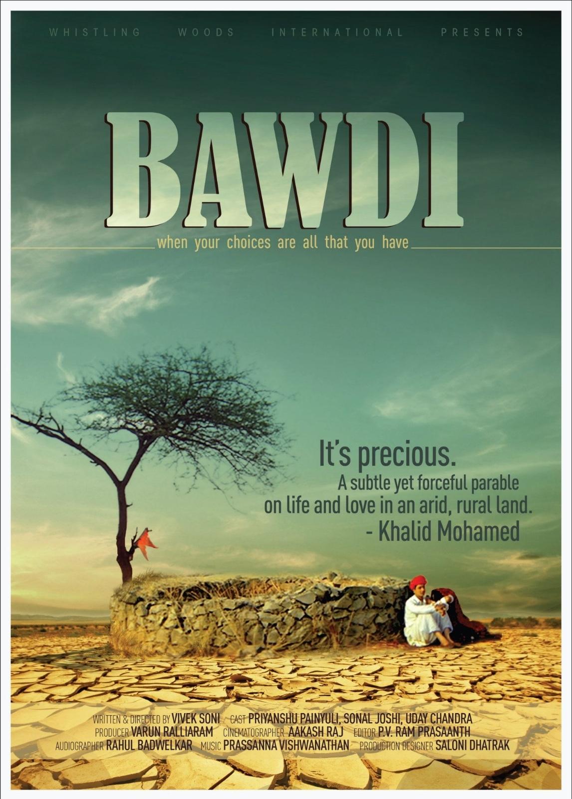

Featured Projects
Notable Acting Roles
She has made a significant mark in the Bollywood film industry with notable performances in commercial films such as Totta Pataaka Item Maal (Shagun Narwal), Bawdi (Tulsi), The Girl And The Autorickshaw (Brinda), Saheb Biwi Aur Gangster (Rukma – Madhavi’s maid), and Uss Din. Her dynamic acting skills have captivated audiences and demonstrated her range and depth as an actress. In addition to her acting career, Sonal has showcased her talents behind the camera as a producer and writer. She is the creative force behind Dabbal, a project that highlights her ability to tell compelling stories and manage production intricacies. She has also produced and directed documentaries and short films like ‘Life as we knit it’, and ‘The undaunted 2 Dogra’
Totta Pataaka Item Maal

Role: Shagun Narwal – A bold story where I played a central character addressing sensitive social issues.
Bawdi



Role: Tulsi – A powerful role that explores the nuances of rural life and women’s struggles.
Valmiki Ki Bandook

Role: Lalli – An endearing coming of age story of a man and his wife trying to hold their own by owning a double barrelled gun.
Saheb Biwi Aur Gangster

Role: Rukma (Madhavi’s maid) – A thrilling story where I portrayed a supporting yet impactful character.
Uss Din

A memorable role highlighting the intricacies of human relationships and emotions.
Producing, Writing, and Directing
Dabbal

A project where I served as both producer and writer, bringing together compelling storytelling and production management.
Life as we knit it

A documentary I produced and directed, focusing on the human stories intertwined with the craft of knitting.
The Undaunted 2 Dogra

A short film that I directed, showcasing resilience and untold stories from the Dogra community.